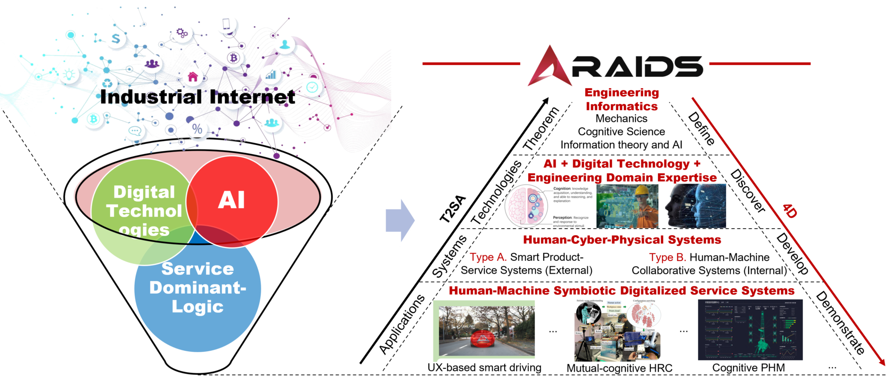

Vision
To become a world-class research group in the industrial digital servitization era.
Research Group of AI for Industrial Digital Servitization
We develop reliable embodied and data-centric AI for industrial digital servitization— bridging human–robot collaboration, smart manufacturing, and deployable systems with rigorous research and real-world validation.
The Research Group of AI for Industrial Digital Servitization (RAIDS) was established in 2020 at The Hong Kong Polytechnic University, Department of Industrial and Systems Engineering.
To become a world-class research group in the industrial digital servitization era.
Difficult, but not impossible.
To boost the establishment of a human-machine symbiotic industry environment, by introducing/leveraging advanced manufacturing and robotics technologies, artificial intelligence methodologies, and digitized systems/tools, in a digital servitization manner.

Recent milestones from the group and our community.
CMES delegation visit
We were honoured to host a delegation from the Chinese Mechanical Engineering Society (CMES).
CIRP-CATS conference hosted
RAIDS successfully hosted the 11th CIRP Conference on Assembly Technologies and Systems (CATS).
ASME Fellow election
Congratulations to Prof. Pai Zheng on his election as an ASME Fellow.
Learn more about our work across the lab.